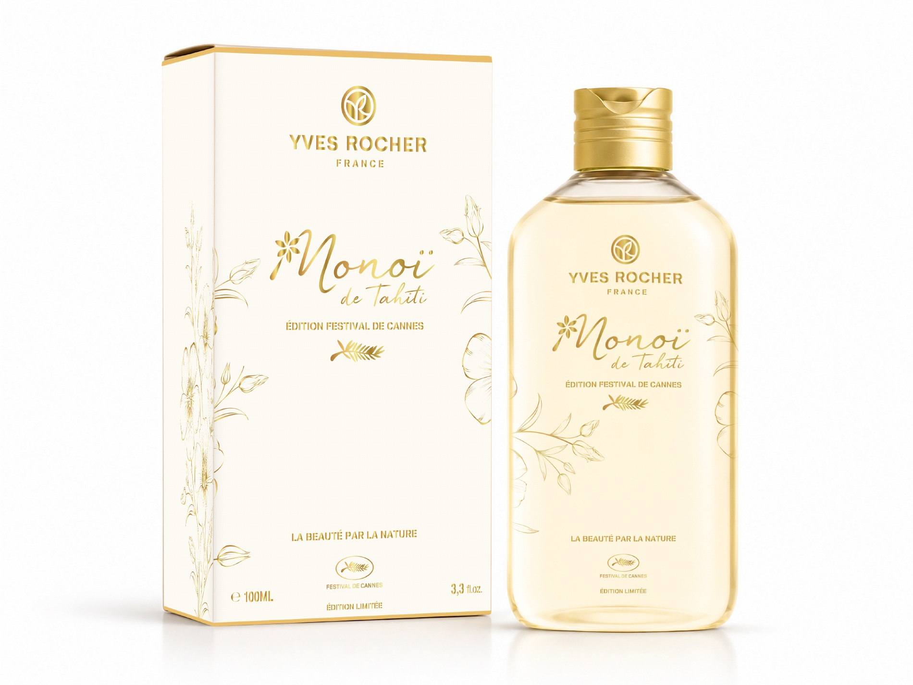

Yves Rocher
Packaging
Glissez pour tourner · Défilez ou pincez pour zoomer.
La vue 3D est indisponible. Retrouvez les visuels ci-dessous.

Glissez pour tourner · Défilez ou pincez pour zoomer.
La vue 3D est indisponible. Retrouvez les visuels ci-dessous.